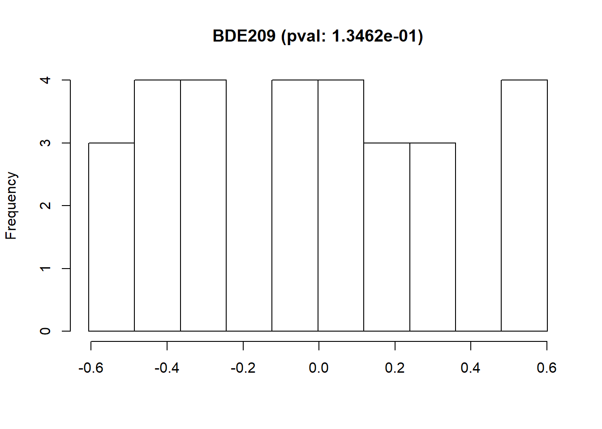
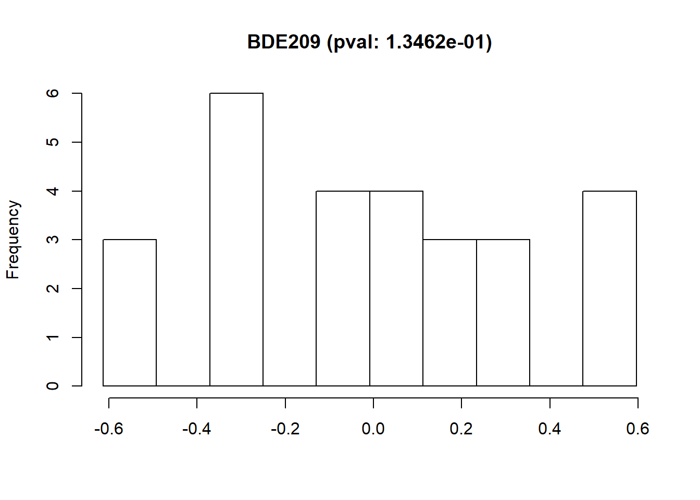
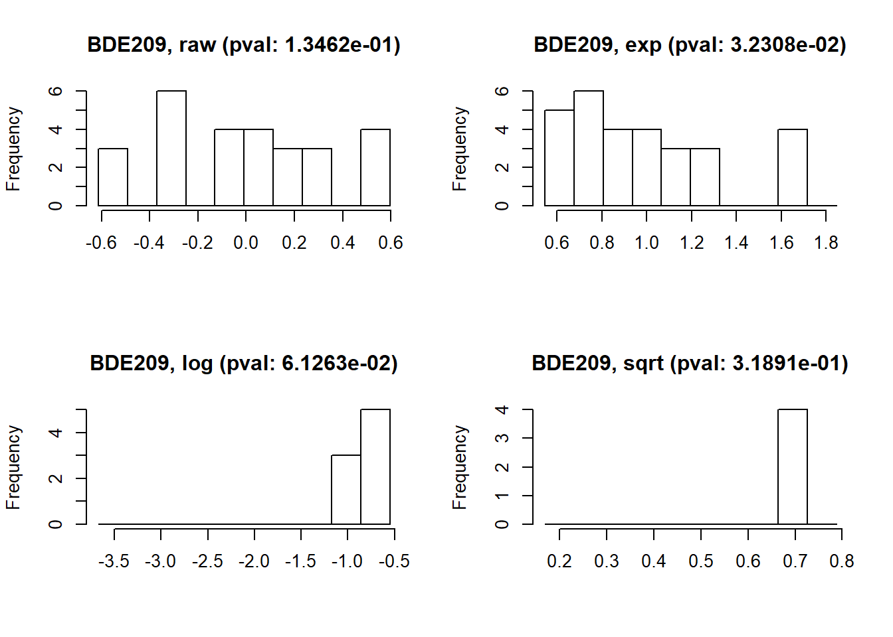
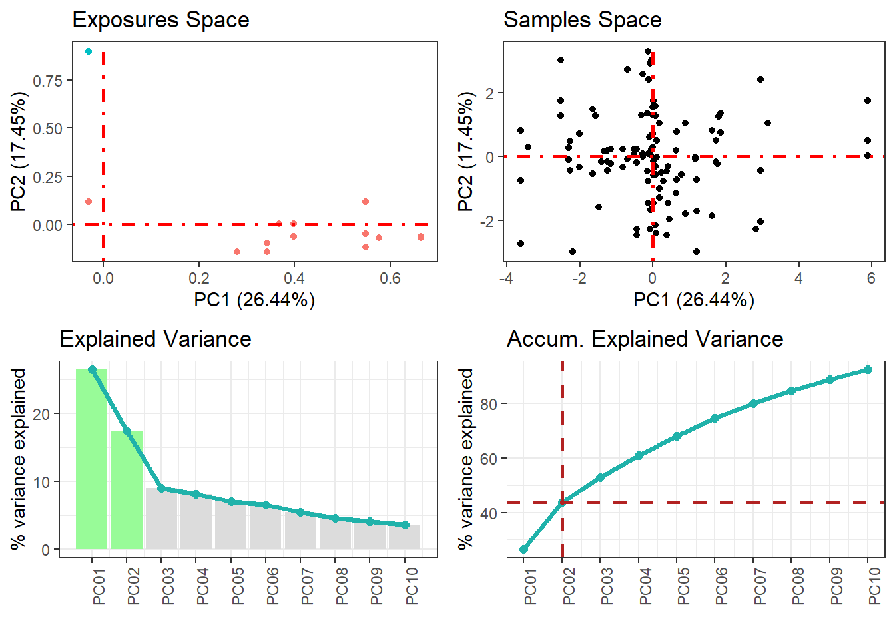
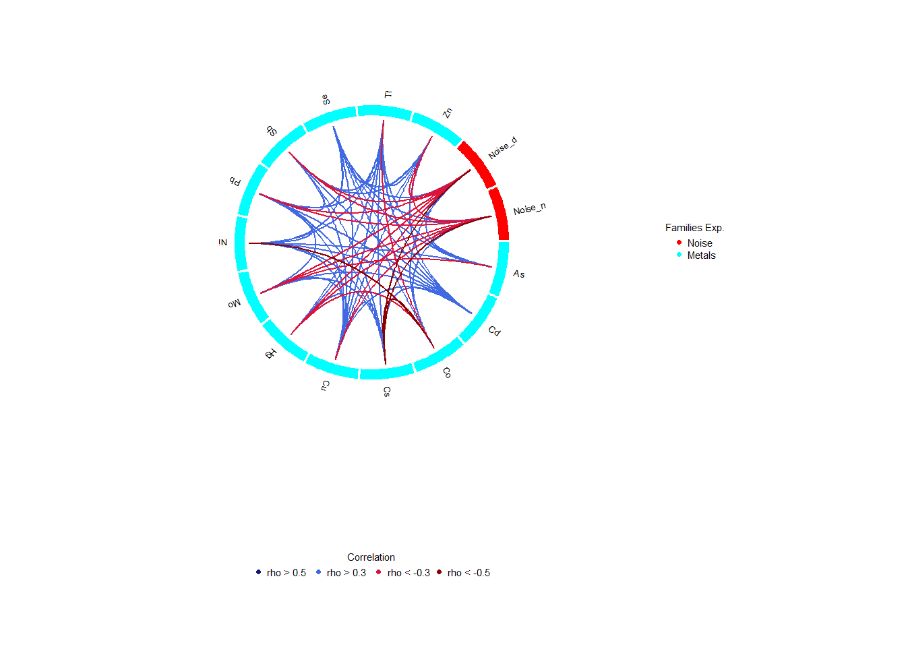

18 Exposome data analysis
18.1 Loading the Exposome Set
An exposome dataset is made up from three different tables. In order to be studied, this three tables need to be coerced into a R object of class ExposomeSet, for that reason an exposome dataset can be available on a server as three tables or as a resource.
18.1.1 From tables to ExposomeSet
To coerce the three tables that make the exposome dataset into an ExposomeSet R object, the tables have to be loaded inside the same study server. On this example, the tables are on the demo Opal server as resources, which means they have to be loaded on the study server and be coerced as data frames; for more information read the resourcer package documentation.
library(dsBaseClient)
library(dsExposomeClient)
library(DSOpal)
builder <- newDSLoginBuilder()
builder$append(server = "server1", url = "https://opal-demo.obiba.org/",
user = "administrator", password = "password",
driver = "OpalDriver")
logindata <- builder$build()
conns <- datashield.login(logins = logindata)
datashield.assign.resource(conns, symbol = 'description', resource = list(server1 = 'EXPOSOME.description'))
ds.class('description')$server1
[1] "TidyFileResourceClient" "FileResourceClient" "ResourceClient" "R6" datashield.assign.expr(conns, symbol = "description", expr = quote(as.resource.data.frame(description)))
ds.class('description')$server1
[1] "spec_tbl_df" "tbl_df" "tbl" "data.frame" datashield.assign.resource(conns, symbol = 'exposures', resource = list(server1 = 'EXPOSOME.exposures'))
datashield.assign.expr(conns, symbol = "exposures", expr = quote(as.resource.data.frame(exposures)))
datashield.assign.resource(conns, symbol = 'phenotypes', resource = list(server1 = 'EXPOSOME.phenotypes'))
datashield.assign.expr(conns, symbol = "phenotypes", expr = quote(as.resource.data.frame(phenotypes)))
ds.ls()$server1
$server1$environment.searched
[1] "R_GlobalEnv"
$server1$objects.found
[1] "description" "exposures" "phenotypes" If the tables are on the Opal server as tables instead of resources, the lines after the datashield.login would look like this
# Don't run this code, the tables are not on the demo Opal server, it's just for demostration purposes
datashield.assign.table(conns, symbol = 'description', table = list(server1 = 'EXPOSOME.description_table'))
# Repeat for the other two tablesWhen there are tables on the Opal server they can be directly loaded to the study server as data frames, there is no need to perform the as.data.frame assignation.
To coerce the three tables to the ExposomeSet object, the dsExposomeClient library has the ds.loadExposome() function, which takes as input parameters the names of the tables on the study server among some further configuration options, refer to the function documentation for more information.
ds.loadExposome("exposures", "description", "phenotypes", "idnum", "idnum", "Exposure", "Family", 5, FALSE, "exposome_object")
ds.class("exposome_object")$server1
[1] "ExposomeSet"
attr(,"package")
[1] "rexposome"18.1.2 From resource to ExposomeSet
When there’s an ExposomeSet resource available, it just needs to be loaded into the study server
datashield.assign.resource(conns, symbol = 'exposome_resource', resource = list(server1 = 'EXPOSOME.exposomeSet'))
ds.ls()$server1
$server1$environment.searched
[1] "R_GlobalEnv"
$server1$objects.found
[1] "description" "exposome_object" "exposome_resource" "exposures" "phenotypes" $server1
[1] "RDataFileResourceClient" "FileResourceClient" "ResourceClient" "R6" Once on the study server, the resource has to be coerced into an R object
datashield.assign.expr(conns, symbol = "exposome_resource", expr = quote(as.resource.object(exposome_resource)))
ds.class("exposome_resource")$server1
[1] "ExposomeSet"
attr(,"package")
[1] "rexposome"18.2 Exploring the loaded dataset
Once the Exposome datasets are loaded on the study servers, some simple functions can be used to have some understanding of what the dataset contains. Those correspond to the name of the exposures, the names of the families of the exposures and the name of the phenotypes.
18.2.1 Family names
To get the names of the families of exposures present on the exposome set, there’s the ds.familyNames function, it can take the parameter by.exposure = TRUE to list the family names and the exposures that contain each family.
$server1
[1] "Air Pollutants" "Metals" "PBDEs" "Organochlorines" "Bisphenol A" "Water Pollutants" "Built Environment"
[8] "Cotinine" "Home Environment" "Phthalates" "Noise" "PFOAs" "Temperature" AbsPM25 As BDE100 BDE138 BDE153 BDE154
"Air Pollutants" "Metals" "PBDEs" "PBDEs" "PBDEs" "PBDEs" 18.2.2 Exposures and phenotypes names
To get the names of the exposures or phenotypes (or both combined) there’s the function ds.exposome_variables, it takes as argument exposures, phenotypes or all to retrieve the desired names.
[1] "AbsPM25" "As" "BDE100" "BDE138" "BDE153" "BDE154" $server1
[1] "whistling_chest" "flu" "rhinitis" "wheezing" "birthdate" "sex" "age" "cbmi"
[9] "blood_pre" 18.2.3 Summary of variables
Non-disclosive descriptive statistics can be obtained from the exposome dataset, the function ds.exposome_summary is in charge of that. It can obtain descriptive statistics from numeric and factor variables of the exposome dataset (both from exposures and phenotypes).
$server1
$server1$class
[1] "numeric"
$server1$length
[1] 109
$server1$`quantiles & mean`
5% 10% 25% 50% 75% 90% 95% Mean
1.093217 1.132021 1.146654 1.171904 1.181451 1.202192 1.216758 1.165488 $server1
$server1$class
[1] "character"
$server1$length
[1] 10918.2.4 Missing data
The number of missing data on each exposure and on each phenotype can be found by using the function ds.tableMissings. This function returns a vector with the amount of missing data in each exposure or phenotype. The argument set indicates if the number of missing values is counted on exposures or phenotypes. The argument output indicates if it is shown as counts (output="n") or as percentage (output="p").
$server1
Dens Temp Conn AbsPM25 NO NO2 NOx PM10 PM10Cu PM10Fe PM10K
0 0 1 2 2 2 2 2 2 2 2
PM10Ni PM10S PM10SI PM10Zn PM25 PM25CU PM25FE PM25K PM25Ni PM25S PM25Sl
2 2 2 2 2 2 2 2 2 2 2
PM25Zn PMcoarse Benzene PM25V ETS G_pesticides Gas BTHM CHCl3 H_pesticides Noise_d
2 2 3 3 5 5 5 6 6 6 6
Noise_n THM Cotinine bHCH DDE DDT HCB PCB118 PCB138 PCB153 PCB180
6 6 7 13 13 13 13 13 13 13 13
BPA As Cs Mo Ni Tl Zn Hg Cd Sb Green
21 24 24 24 24 24 24 27 28 30 31
Cu PM10V Se MBzP MEHHP MEHP MEOHP MEP MiBP MnBP X5cxMEPP
40 41 45 46 46 46 46 46 46 46 46
Co PFHxS PFNA PFOA PFOS X7OHMMeOP Pb X2cxMMHP BDE100 BDE138 BDE153
47 48 48 48 48 49 59 64 76 76 76
BDE154 BDE17 BDE183 BDE190 BDE209 BDE28 BDE47 BDE66 BDE71 BDE85 BDE99
76 76 76 76 76 76 76 76 76 76 76 $server1
whistling_chest flu rhinitis wheezing sex age cbmi blood_pre birthdate
0 0 0 0 0 0 0 2 3 Optionally, there’s also the ds.plotMissings function which returns a ggplot object with a barplot of missings for exposures or phenotypes, there’s the option of displaying the percentage of missings as well as total counts, check the function documentation for further information.
$server1
Please note that since this function call returns a ggplot object, it can be plotted properly to avoid squished Y axis when there are lots of exposures, read the official documentation for information on how to do that.
18.2.5 Exposures Normality
Most of the test done in exposome analysis requires that the exposures must follow a normal distribution. The function ds.normalityTest performs a test on each exposure for normality behaviour. The result is a data.frame with the exposures’ names, a flag TRUE/FALSE for normality and the p-value obtained from the Shapiro-Wilk Normality Test (if the p-value is under the threshold, then the exposure is not normal).
FALSE TRUE
55 29 So, the exposures that do not follow a normal distribution are:
[1] "DDT" "PM10SI" "PM25K" "PM25Sl" "PCB118" "Tl" "PM10V" "PM25Zn" "PM25FE" "PM10K" "BDE17" "PM25" "PMcoarse"
[14] "PM10" "BPA" "Green" "NO2" "Cs" "PFNA" "PCB153" "PM25CU" "MEOHP" "Cu" "HCB" "MEHHP" "DDE"
[27] "BDE190" "bHCH" "PM10Zn" "MnBP" "NO" "NOx" "PM10S" "MEHP" "PCB138" "Zn" "X2cxMMHP" "PCB180" "PFOA"
[40] "Cotinine" "PM25S" "Co" "Conn" "PM25Ni" "PFHxS" "PM10Ni" "Cd" "Dens" "Se" "X5cxMEPP" "BDE183" "BDE28"
[53] "Sb" "BDE138" "PM25V" The ds.normalityTest function has some extra input arguments to tune the normality test, check the function documentation for further information.
The exposures can be visualized using non-disclosive histograms to see their distribution along their Shapiro-Wilk Normality Test p-value.

If the selected exposure is not following a normal distribution, the function ds.exposure_histogram accepts the argument show.trans to visualize the raw data histogram plus three typical transformations (exp, log and sqrt), the Shapiro-Wilk Normality Test p-value is shown for all the transformations.

18.2.6 Exposures Behaviour
We can get a snapshot of the behaviour of the full exposome using the ds.plotFamily function. This function draws a mosaic of boxplots with all the numeric families of exposures, it can also plot single families and perform grouping inside of them. This function makes use of the ggplot2 library to generate the plots. Future plans include displaying non-disclosive plots for non-numeric families.


18.3 Exposures Imputation
The missings of an exposome dataset can be imputed using the ds.imputation function, which calls the rexposome function imputation on the study server. Refer to the documentation of rexposome for details about the imputation procedures.
18.4 Performing an ExWAS
When the ExposomeSet object is on the study the server, the function ds.exwas is in charge of performing the ExWAS. As an example let’s present a situation where each exposition has to be associated to the blood_pre phenotype using the phenotype sex as a covariate. This study would be done as follows
exwas_results <- ds.exwas("blood_pre ~ sex", "exposome_object", "gaussian")
head(exwas_results$exwas_results) exposure family coefficient minE maxE p.value
1 AbsPM25 Air Pollutants 20.2567443 11.532500 28.980989 5.343657e-06
2 As Metals 0.5049329 -1.637091 2.646956 6.440695e-01
3 BDE100 PBDEs -1.4684745 -5.073223 2.136273 4.246181e-01
4 BDE138 PBDEs 1.2819339 -4.872401 7.436269 6.830857e-01
5 BDE153 PBDEs 2.8699183 -1.252769 6.992606 1.724462e-01
6 BDE154 PBDEs 0.1317781 -5.381815 5.645371 9.626373e-01The model is inputted as a string, where the left side term is the objective phenotype, and the right term are the covariates, in the case of wanting more covariates proceed as: objective ~ cov1 + cov2 + ... + covN. It’s important noting that if the output family (third argument) does not match the objective family, the ExWAS will fail (Example: The objective family is binomial and the user sets it to gaussian).
To visualize the results from the ExWAS, the function ds.plotExwas takes the output of ds.exwas and creates two different visualizations. A Manhattan-like plot with the p-values of the association between each exposure and asthma, coloured by families of exposures:

Also, a plot for the effects of a given model can be obtained with:

18.5 Exposures PCA
A PCA can be performed on the exposures of the exposome dataset. To do so, there’s the ds.exposome_pca. The exposures should be standardized in order to perform the PCA properly, to do so, there’s the arguments standar and method, which standardize the Exposome Set before performing the PCA following the specified method. The available methods are normal (default method), which scales the exposures using the mean as the center and the standard variation as dispersion; the robust method, which uses the median and median absolute deviation respectively; and, interquartile range, which uses the median as the center and the coeficient between the interquartile range of the exposure and the normal range between the percentile 75 and 25 as variance. It is important noting that this function is sensitive to be disclosive, specially for very rectangular data frames (similar number of variables as individuals). To illustrate this problem, let’s try to perform a PCA on the whole exposures test data.
Error: There are some DataSHIELD errors, list them with datashield.errors()If that is the case, one option is to reduce the families of exposures of the Exposome Set. The ds.exposome_pca function has the argument fam to select the families to subset the Exposome Set to perform the PCA.
The PCA function saves the results on the study server to prevent any dislosures, the default variable they take is called "ds.exposome_pca.Results", which has to be passed to the visualization function. To visualize the results of the PCA there is the function ds.exposome_pca_plot, this function relies on the visualization methods already implemented on rexposome for the PCA analysis, it does it however on a non-disclosive way, by passing the scatter plot points through an anonimization process, hence the arguments k, method and noise. The visualization is controlled with the set argument, which takes "all" (mosaic of plots of the PCA), "exposures" (plot of the exposures space on the first two principal components, color coded by family), "samples" (plot of the individuals space on the first two principal components, this plot can take the phenotype argument to color code the individuals by phenotypes), "variance" and "variance_explained", the two variance plots are quite self explanatory, the color code on the "variance" highlights the first two principal components as they are the ones shown on the other drawings.

ds.exposome_pca_plot("ds.exposome_pca.Results", set = "samples", phenotype = "sex", method = 1, k = 3, noise = 5)


ds.exposome_pca_plot("ds.exposome_pca.Results", set = "variance_explained", method = 1, k = 3, noise = 5)
Furthermore, the ds.exposome_pca_plot function can plot the correlations betweeen the principal components and the exposures and the association of the phenotypes with the principal components. This two visualizations can be obtained by setting the set argument to "exposures_correlation" and "phenotypes_correlation" respectively.


18.6 Exposures Correlation
The correlation between exposures, in terms of intra-family and inter-family exposures, is interesting to take into account. The correlation of the exposome can be computed using ds.correlation. The correlation could be disclosive, for that reason there’s the argument fam to select the families to compute the correlation subsetting the exposome dataset by families, typical complete exposome datasets will fail as the correlation matrix could be disclosive.
[,1] [,2] [,3] [,4] [,5]
[1,] NA NA NA NA NA
[2,] NA NA NA NA NA
[3,] NA NA NA NA NA
[4,] NA NA NA NA NA
[5,] NA NA NA NA NA[1] "ERROR: The ratio of the number of variables over the number of individual-level records exceeds the allowed threshold, there is a possible risk of disclosure"When subsetting the exposome set by families the correlation succeeds.
[,1] [,2] [,3] [,4] [,5]
[1,] 1.00000000 0.08897651 -0.12603679 0.1112793 -0.03127031
[2,] 0.08897651 1.00000000 0.10209881 0.5356812 0.84660044
[3,] -0.12603679 0.10209881 1.00000000 -0.5111215 -0.05851681
[4,] 0.11127929 0.53568121 -0.51112146 1.0000000 0.47229280
[5,] -0.03127031 0.84660044 -0.05851681 0.4722928 1.00000000The output from the ds.correlation consists of the correlation matrix and a vector that contains the names of exposures and families on the correlation table, this second item is used by the corPlot function to display the results of the correlation study.

The best option to see the inter-family correlations is the circos of correlations while the matrix of correlations is a better way for studying the intra-family correlations.